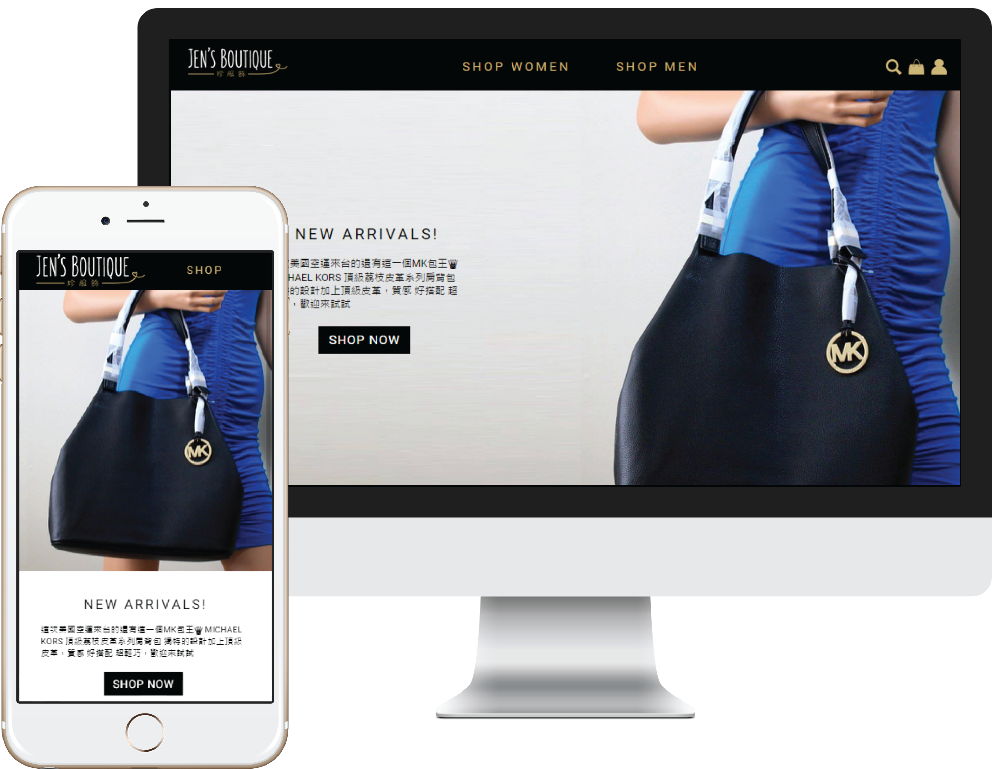
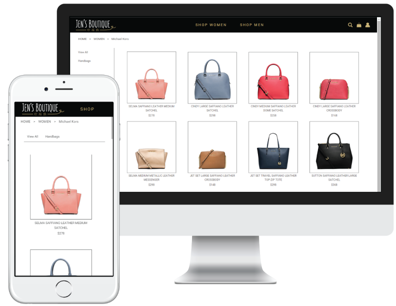
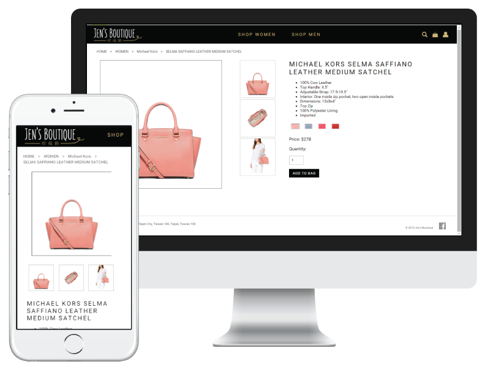

This is a template site for Jen's Boutique, an Taiwan-based online shopping company. Although only some links work, the site includes links to different template pages such as "Product Details", "Browse Product", "Checkout". Since the company sells branded products, we kept the site simple and elegant using typography and minimal colors.
 The browse page is kept to a simple color scheme of grey and white. This allows the products to stand out as they are usually very colorful.
The detail page gives customers the details of the product they chose and gives them the choice of viewing different images and colors of the product. Once the customer decides that this is what he or she wants, they can enter the amount they wish to purchase and add it into their cart.

Once the product is added to cart, users can head to the cart page to checkout or see what they have in cart. In the cart page, users can change the amount of products they wish to purchase. If they decided that they do not want a product, they could also remove the item. Additional comments could be added to the order for the company to know if there are any issues or suggestions.